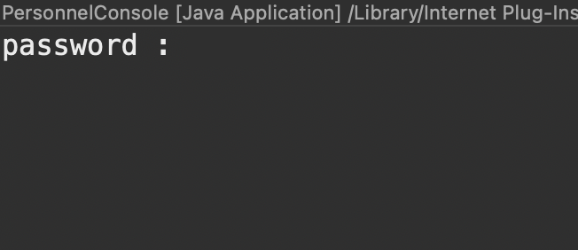

Présentation
Voici une courte présentation de notre application reposant sur une architecture en trois tiers. L'architecture logique du système est divisée en trois niveaux ou couches :
- Couche de présentation
- Couche de traitement
- Couche d'accès aux données
C'est une architecture basée sur l'environnement client-serveur.
L'application a pour fonction : la création de ligue, la création d'employé avec comme paramètres un nom, un prénom, un email, un mot de passe, une date d'arrivée et une date de départ.
Les employés sont assignés à des ligues. Chaque ligue possède un administrateur qui est de base le super-utilisateur (root), nous avons la possibilité de définir un employé comme administrateur de sa ligue.
Un employé ne peut administrer qu'une ligue à la fois.
Objectifs
- Transformer l'application mono-utilisateur en une application multi-utilisateurs.
- Mettre en place une gestion des droits d'accès selon trois niveaux d'habilitation : simple employé de ligue, employé administrateur de ligue, et super-administrateur.
- Conserver l'architecture 3-tiers de l'application.
Utilisation
Démarrage de l'application :
Un mot de passe root est demandé au démarrage, le mot de passe est : toor
Navigation dans l'application :
Il est possible de naviguer dans l'app grace à des raccourcis directement proposé.

Fermeture de l'application :
Lors de la fermeture il nous ai proposé soit d'enregistrer nos modification, soit de quitter sans enregistrer.